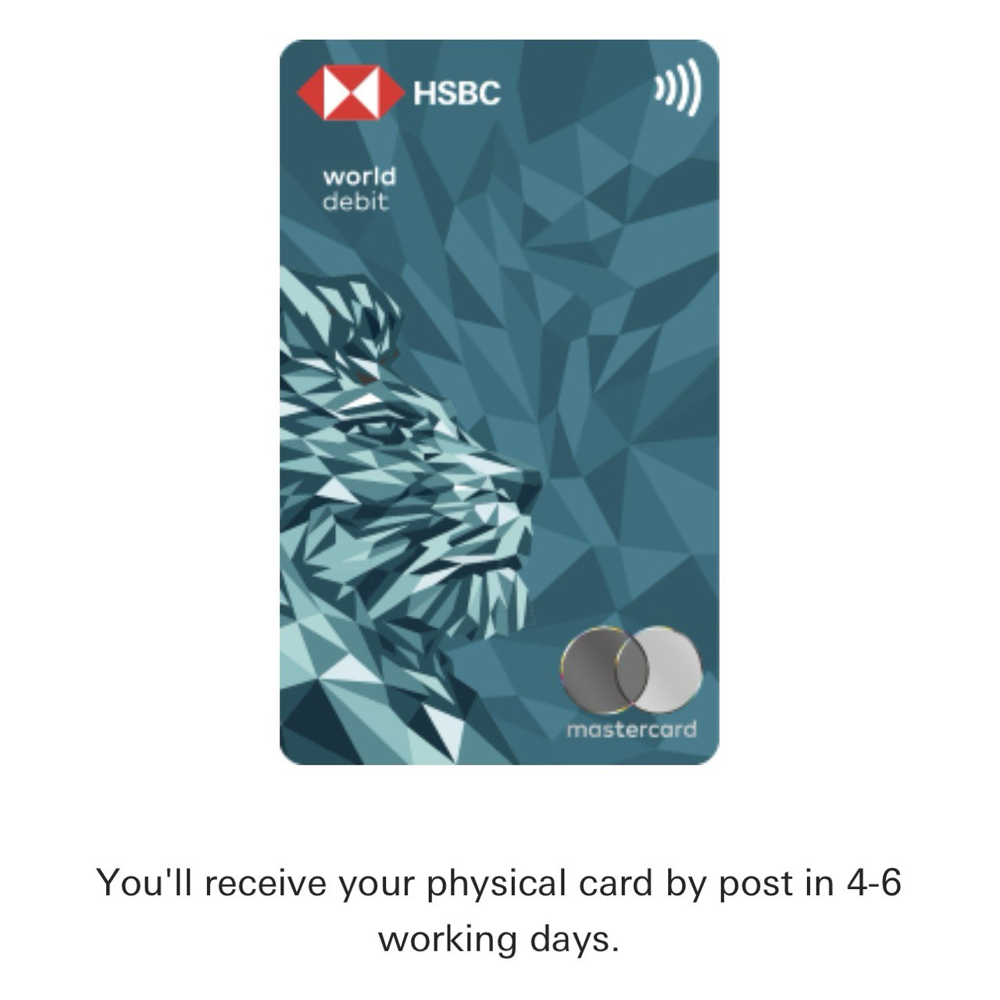

Experiencia Bancaria en Singapur y Hong Kong | Original, traducido por IA
Actualizado en septiembre de 2025.
Tabla de Contenidos
- Incidente de retención de tarjeta de débito de HSBC
- Tarjeta retenida accidentalmente en un cajero automático
- Soporte de HSBC a través de WhatsApp/app
- Tarjeta de reemplazo enviada en una semana
- Apertura de una cuenta bancaria en OCBC
- Solo requiere pasaporte/identificación china
- La app digital simplifica el proceso de verificación
- Incluye Cuenta 360 con recompensas
- Activación de la tarjeta requiere visita a sucursal
- Riesgo de cierre de cuenta por inactividad
Incidente de retención de tarjeta de débito de HSBC
Obtuve mi tarjeta de débito de HSBC en mayo de 2023 en la sucursal de Sha Tin en Hong Kong. Desafortunadamente, justo en el cajero automático fuera de la sucursal, mi tarjeta fue retenida.
Después de aprender algunas operaciones básicas, iba a recuperar mi tarjeta de la máquina. Sin embargo, mi hija estaba jugando y quería tocar la tarjeta. De repente, la tarjeta fue retenida.
Esto ocurrió en julio de 2025. Primero usé WhatsApp para chatear con HSBC. Luego, me indicaron que usara la app de HSBC HK para comunicarme con ellos.
Me dijeron algo como:
Gracias por su paciencia, Sr. Li. Tras verificar, encontramos que existe una tarjeta de cajero automático a su nombre con un registro de producción el 19 de mayo de 2023. Si no ha recibido esta tarjeta, podemos reportarla como perdida y emitirle una nueva.
¿Necesita que la reportemos como perdida y emitamos una nueva tarjeta para usted?
De acuerdo. Hemos procesado su solicitud y su tarjeta ha sido desactivada.
Hay algunas cosas que puede hacer o tener en cuenta mientras tanto para proteger su dinero y activos:
- Le recomendamos revisar el historial de transacciones a través de la banca en línea o la app de HSBC HK de inmediato para confirmar si hay transacciones no autorizadas después de perder la tarjeta. Si es así, contáctenos para recibir ayuda adicional.
- Su número de cuenta permanecerá sin cambios. Le recomendamos cambiar el PIN de su tarjeta de reemplazo una vez que la haya recibido, incluso si su PIN actual sigue funcionando (puede hacerlo en cualquiera de nuestros cajeros automáticos).
- No será necesario registrarse nuevamente en nuestro Servicio de Pago por Teléfono (PPS) si su tarjeta de cajero automático perdida ya estaba registrada.
- Si la tarjeta perdida tenía una firma, visite su sucursal más cercana para cambiar la firma asociada a su cuenta.
Nuestras tarjetas de cajero automático se envían por correo ordinario. No hay número de seguimiento.
Generalmente, el envío a una dirección en Hong Kong tarda hasta una semana, y para direcciones en el extranjero, de 7 a 11 días hábiles, dependiendo del tiempo de envío.
Espero que esta vez funcione. Esperemos la nueva tarjeta.
 Fuente: Captura propia
Fuente: Captura propia
Recibí la tarjeta alrededor del 14 de agosto de 2025. Fue genial. Probé dos cajeros automáticos de HSBC en Guangzhou: uno en Taikoo Hui y otro en Tianhe City. Comencé a aprender los detalles del producto y cómo usarlo de manera efectiva para facilitar mi vida. También intenté solicitar la tarjeta de débito HSBC World.
La tarjeta que recibí se llama HSBC UnionPay Debit Card. Sin embargo, cuando fui a una tienda 7-Eleven a comprar una bebida, lo intenté varias veces con la ayuda del personal, pero no pudimos usar con éxito mi tarjeta de débito HSBC UnionPay. Todavía no sé la razón. Más tarde, aumenté los límites en la app. Lo intentaré nuevamente en otro momento.
 Fuente: Captura propia
Apertura de una cuenta bancaria en OCBC en China
12.07.2024
Esta publicación de blog se escribió con la asistencia de ChatGPT-4o.
En la era digital actual, gestionar las finanzas y acceder a servicios en la nube se ha vuelto más sencillo que nunca. Si eres ciudadano chino con pasaporte chino y carnet de identidad chino, abrir una cuenta bancaria con OCBC Digital y usarla para registrarse en Google Cloud Platform es un proceso fluido. Aquí tienes una guía paso a paso para ayudarte en el proceso.

Paso 1: Abrir una cuenta bancaria en OCBC
Requisitos:
- Pasaporte chino
- Carnet de identidad chino
Procedimiento:
- Descargar la app OCBC Digital:
- Ve a la App Store o Google Play Store y descarga la app OCBC Digital.
- Registrarse:
- Abre la app y selecciona la opción para registrar una nueva cuenta. Se te pedirá que proporciones tu información personal, incluyendo los detalles de tu pasaporte chino y carnet de identidad.
- Verificación:
- OCBC requerirá que verifiques tu identidad. Esto puede implicar tomar una foto de tu pasaporte y carnet de identidad, así como un selfie para reconocimiento facial.
- Selección de cuenta:
- Durante el proceso de registro, elige abrir tanto una Cuenta de Ahorros Global como una Cuenta de Ahorros con Estado de Cuenta. Estas cuentas te ayudarán a gestionar tus finanzas de manera efectiva.
- Apertura de una Cuenta 360:
- Además, opta por abrir una Cuenta 360. Esta cuenta ofrece diversos beneficios y recompensas según tus actividades de gasto y ahorro. Al abrir una Cuenta 360, también recibirás una tarjeta de débito vinculada a esta cuenta.
- Completar el proceso:
- Sigue las instrucciones en pantalla para completar el proceso de apertura de cuenta. Es posible que debas visitar una sucursal para la verificación final, dependiendo de tu situación.
Paso 2: Activar tu tarjeta de débito
- Recibir y activar tu tarjeta de débito:
- Una vez que tu Cuenta 360 esté configurada, recibirás una tarjeta de débito de OCBC. Puedes activarla en línea a través de la app OCBC Digital o visitando el sitio web de OCBC.
Conclusión
Abrir una cuenta bancaria con OCBC Digital usando un pasaporte chino y carnet de identidad es un proceso sencillo. Al configurar tu Cuenta de Ahorros Global, Cuenta de Ahorros con Estado de Cuenta y Cuenta 360, y obtener una tarjeta de débito, podrás gestionar tus finanzas fácilmente. Además, usar tu tarjeta de débito de OCBC para registrarte en Google Cloud Platform te proporciona un acceso fluido a potentes servicios en la nube. Aprovecha la comodidad y comienza a gestionar tus finanzas y servicios en la nube sin esfuerzo hoy mismo.
Actualización - Diciembre 2014
Deposité unos cientos de SGD en mi cuenta de OCBC. Sin embargo, no recibí la tarjeta física. Recibí un correo electrónico del banco notificándome que debía visitar una sucursal de OCBC en Singapur, o de lo contrario cerrarían mi cuenta.
Actualización - Agosto 2025
Comencé a usarla nuevamente en agosto de 2025. Puedo activar la tarjeta de débito de la cuenta bancaria de OCBC.